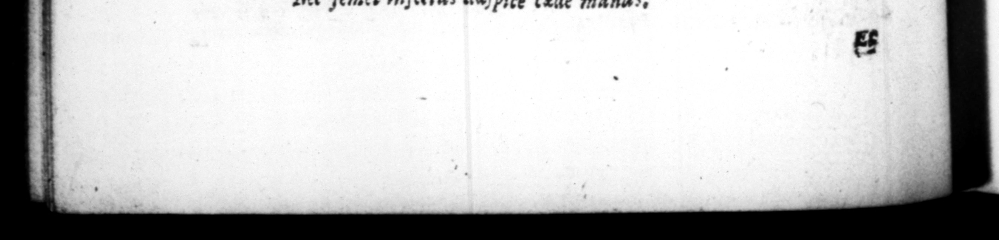

136 8 la minatur, — —— en Pompeio Pympeianus 4 acerba cavillatione ſimul hominis nomen inceſſens, vete rumque partium fortunam. by = biker fortune of the party. - F8. Sub idem tempus, conſulente prætore, an judicia maJeſtatis cogi juberet, exercendas eſſe leges reſpondir, & atrociſſime exercuit. tatuæ uidam Auguſti caput dempt, ut alterius imponeret. Acta res in ſenatu. Et quia ambigebatur, per tormenta uzſita eſt. Damnato reo, — hoc genus calumniæ eo proceſſit, ut, hæc quoque capitalia eſſent; circa Auguſti ſimulacrum ſervum cecidiſſe; veſtimenta mutaſſe; nummo vel annulo e ffigiem impreſſam, latrinz aut lupanari intuliſſe, dictum ullum factumve ejus exiſtimatione aliqua læſiſſe. Periit denique & 15 qui honores in colonia ſua eodem die decernĩ ſibi paſſus eſt quo decreti & Auguſto olim erant. At laſt too @ perſon was cendenm d to dye, for ſuffering ſome Ne her him in the colony where he lived, g | day, on which they had formerly been decreed for zo be 59. Malta prætcrea, ſpecie gravitatis ac morum corrigendorum, fed & magis naturæ obtemperans, ita ſæve & atrociter factitavit: ut nonnulli verſiculis quoque & præſentia exorobrarent, & futura denuntiarent mala: | ſtews , or to refle , C/$SUET. TRANQ: P ad ſomethi ; 29 nate, he threatred to clap him in Jon ; and told him, TS of 8 2 pey he would make a Pompei an of him, kind of drollery playing upon the man's name, and the il 58. About the ſame time, when the pretor conſulted him, whether he plegſed to have the courts fot accuſations of treaſon againſt his perſon, he replyed, that the lav s ought to be put in execution, and he did put them in execution with a vengeance, A cer. rain perſon had takin off the head of Auguftus j rom a ftatue of his, to put another upon it. The matter was brought = the ſenate z and becauſe the caſe was not cle ar, ſome were examined by torture about it, and the party accuſed being found guilty and condemned upon it, this kind of proceſs grew to ſuch a height, that it Home capital for a man 10 teat his ſlave, ochange his cloaths, near the flatue of Augu'us ; to carry his head flawy'd upon the coin, er cut in the tome of 8 ring, into 2 ary houſe, or te upon any thing that had been either ſaid or done by bim. honours upm the ſame us. i $9. Beſides he was guilty of ſo ms: »y barbarous ations, under the pretence of ſtrineſs and refurmation of manners, but more to gratify his own ſg» vage humour, that ſome lampoon'd him for the preſent calamitics of bis reign, and at the ſame time gave warning of the future. | Aſper & immitis, breviter vis omnia dicam ? Diſpeream ſt te mater amare poteſt, Nan es eques, quare? non ſunt tibi millia centum : Omnia ſe queras, & Rhodos exſiluum eſt, Aurea mutaſti Saturni ſecula, Ceſar: Incolumi nam te, ferrea ſemper erunt. Faſtidit vinum, quia gp tit iſte crucrem Tam bibit hunc a vide, quam bibit ante merum. Adſpice felicem ſibi non tibi Ramule Sullam Et Marium, ſt vis, ad ſpice, ſed reducem, Nec non Antoni civilia bella nioventis, Nec ſemel infettas adſpice cede manus.
